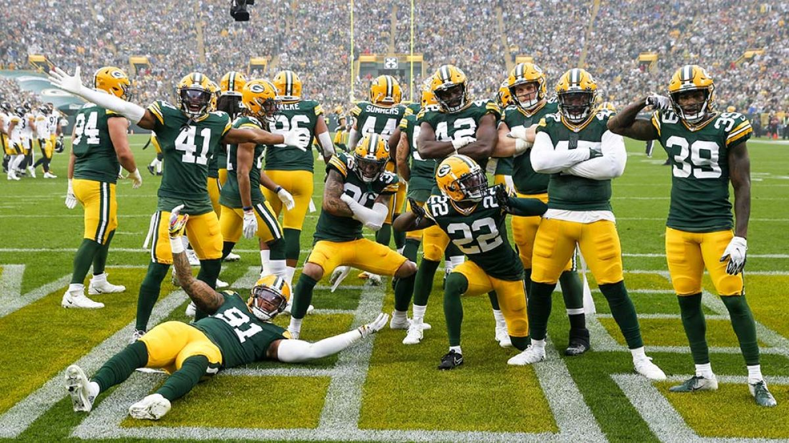

click aqui Los Green Bay Packers (en español, Empacadores de Green Bay) son un equipo profesional de fútbol americano de los Estados Unidos con sede en Green Bay, Wisconsin. Compiten en la División Norte de la Conferencia Nacional (NFC) de la National Football League (NFL) y disputan sus encuentros como locales en el Lambeau Field. El equipo fue fundado en 1919 y se unió a la NFL dos años después. Es una organización sin ánimo de lucro y es la única franquicia de todo el deporte profesional estadounidense cuya propiedad recae directamente en sus socios. A pesar de que Green Bay es  de largo el mercado deportivo más pequeño de los Estados Unidos, Forbes considera a los Packers como el trigésimo primer club deportivo más valioso del mundo y el decimotercero de la NFL con un valor estimado de 3.475 millones de dólares.1 Los Packers son uno de los equipos más laureados de la NFL. A lo largo de su historia han ganado once campeonatos de la NFL, cuatro Super Bowls (para un total de quince títulos nacionales), nueve títulos de conferencia y veintiún títulos de división.
los Green Bay Packers fueron fundados el 11 de agosto de 1919234 por los exjugadores y
rivales de la universidad Earl "Curly" Lambeau y George Whitney Calhoun.5 Lambeau
solicitó fondos para los uniformes a su empresa, la Indian Packing Company. Le dieron
$500 para los uniformes y equipos, a condición de que el equipo se llamara así por su patrocinio.
El 27 de agosto de 1921, a los Packers se les concedió una franquicia en la nueva liga de
fútbol profesional nacional que se había formado el año anterior.6 Debido a los problemas
financieros que plagaron al equipo y a la franquicia, el equipo se perdió el primer
año de liga. Al año siguiente, Lambeau pudo encontrar nuevos financiadores y el equipo
estaba en marcha. Estos patrocinadores, conocidos como el "Hungry Five", formaron la
Corporación de Fútbol de Green Bay.7
{kind=link}